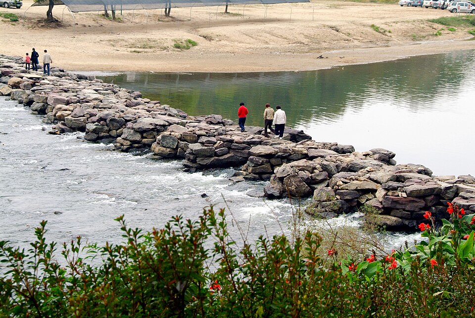

진천 검정고시 — 합격 다음을 먼저 정하고 시작하기

검정고시를 준비할 때 “일단 합격부터 하고 그다음은 나중에 생각하자”고 마음먹는 분이 많습니다. 틀린 말은 아닌데, 이 순서로 가면 합격한 뒤에 한 번 더 멈추게 됩니다. 합격증은 손에 있는데 다음에 뭘 해야 할지 모르는 시기가 오거든요. 진천 검정고시를 고민 중이시라면, 시작하기 전에 그다음 단계를 한 번만 정해 두시길 권합니다.
합격용 공부와 진학용 공부는 다릅니다
검정고시는 전 과목 평균 60점 이상이면 합격입니다. 합격만 목표라면 각 과목에서 자주 나오는 부분만 확실히 잡아도 됩니다. 그런데 합격 뒤에 대학 진학을 생각하고 있다면 이야기가 달라집니다. 진학 준비는 60점을 넘기는 공부가 아니라 점수를 계속 올려 가는 공부이고, 필요한 과목도 조금 달라집니다.
이 둘은 같이 갈 수도 있고, 따로 갈 수도 있습니다. 중요한 건 시작할 때 어느 쪽인지 정하는 것입니다. 정해 두면 지금 어떤 과목에 시간을 더 쓸지가 저절로 정리됩니다.
대학을 본다면 직접 확인해야 할 것
- 지원하려는 대학·전형의 모집요강 — 검정고시 출신이 어떤 전형으로 지원할 수 있는지, 성적을 어떻게 반영하는지는 학교마다 다릅니다. 남의 말이 아니라 그 학교 공고를 직접 보셔야 합니다.
- 필요한 시험이 무엇인지 — 수능이 필요한 길인지, 검정고시 성적과 서류로 가는 길인지에 따라 준비 기간이 크게 달라집니다.
- 언제까지 준비해야 하는지 — 합격 시점과 지원 시점 사이에 시간이 얼마나 남는지 계산해 두면 무리한 계획을 세우지 않게 됩니다.
여기서 구체적인 점수 기준이나 전형 조건을 함부로 말씀드리지 않는 이유는, 학교와 해마다 달라지기 때문입니다. 저희도 상담할 때 지원하려는 곳의 공고를 같이 열어 놓고 이야기합니다.
과목 순서는 목표에 맞춰 정합니다
합격이 먼저인 분은 빨리 60점을 넘길 수 있는 과목부터 끝냅니다. 검정고시는 과목 합격제라 60점을 넘긴 과목은 남아 있으니, 끝낸 과목만큼 어깨가 가벼워집니다.
진학까지 보는 분은 반대로, 나중에 오래 붙들고 가야 할 과목을 먼저 시작합니다. 영어와 수학처럼 쌓는 데 시간이 걸리는 과목은 합격 공부를 하면서 같이 밑작업을 해 두면, 합격 후에 새로 시작하지 않아도 됩니다. 같은 시간을 써도 결과가 달라지는 지점입니다.
진천에서 이렇게 함께합니다
저희는 1:1 맞춤 과외라 목표가 바뀌면 수업도 같이 바뀝니다. 처음엔 합격만 생각하셨다가 중간에 진학 쪽으로 마음이 기우는 경우도 흔한데, 그때 과목 비중과 진도를 다시 잡아 드립니다. 진천과 인근 지역은 방문 수업이 가능하고, 이동이 부담되면 화상(줌) 수업으로 집에서 그대로 진행합니다.